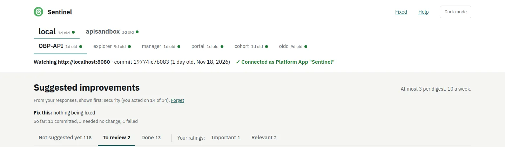

OBP Senti
Watches your platform. Suggests what matters.
OBP Senti watches OBP-API and every app beside it for hours, not seconds, reads the source they run, and suggests the few security and performance fixes that matter most.
OBP Senti
OBP Senti watches OBP-API and every app beside it for hours, not seconds, reads the source they run, and suggests the few security and performance fixes that matter most.
Every OBP-API instance and its apps, watched from one page: what Senti suggests, what you rated and what has been fixed.

The same watchful eye for any API, app or website: one short briefing, fixes when you ask.
Where developers sign up, get an API key, read the guides and make their first call.
Every endpoint documented, with the Roles it needs, and callable from the page.
Where bank staff manage users, Roles, consumers and data, and watch the platform live.
Planning an open banking platform, a banking-as-a-service offer or a regulatory sandbox? Tell us what you want to build, and we will show you OBP-API and its apps working with your own banks, products and standards.